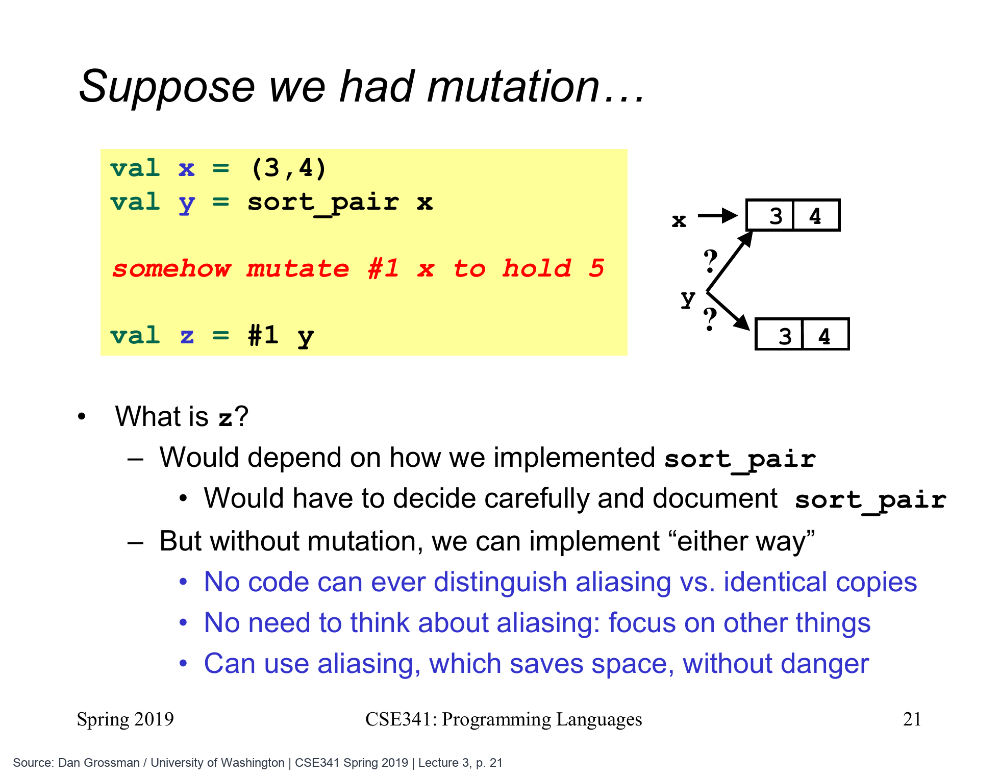
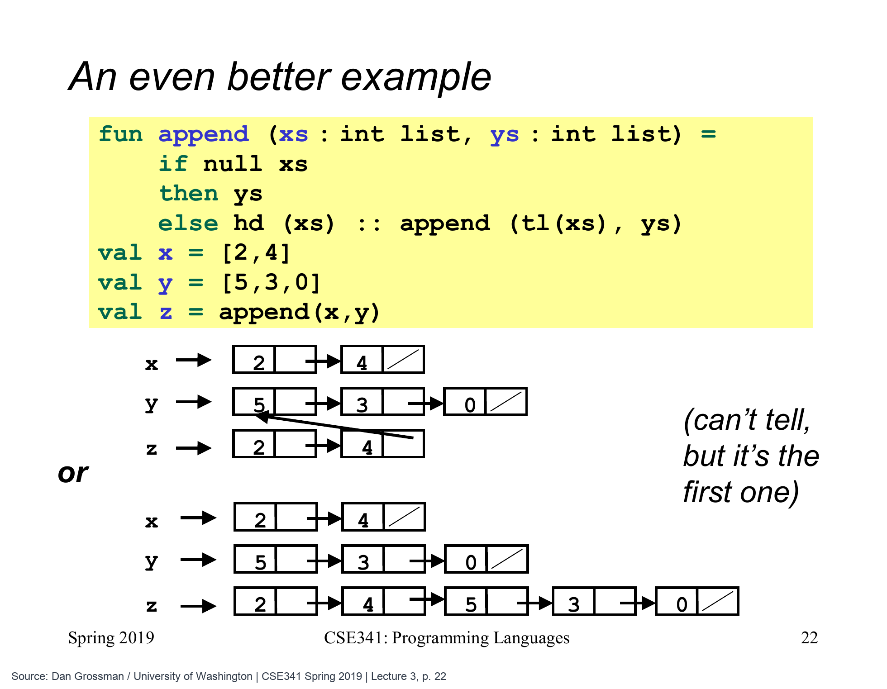

返回已有的阅读记录，会不会影响原数据
前面已经写过两个处理数据的函数：sort_pair 把一对整数排好顺序，append 把两份列表接成一份。它们都会返回结果，但“返回一个结果”不一定意味着“把输入的所有数据重新做一份”。
先回到 sort_pair。假如两天的阅读量已经是 (12,18)，顺序本来就正确，函数直接返回输入的 pr 即可。现在的问题是：让调用者拿到已有的数据，会不会让一方后来的操作影响另一方？
这篇先把这个问题看清，再给它涉及的共享、别名与不可变性起名字。
同一个结果，为什么有两种写法
下面仍是已经学过的函数：输入一对整数，输出把较小整数放在前面的二元组。只有需要交换时，它才重新构造顺序：
fun sort_pair (pr : int * int) =
if #1 pr < #2 pr
then pr
else (#2 pr, #1 pr)
val record = (12,18)
val sorted = sort_pair record (* (12,18) *)如果为了“每次都返回新组成的二元组”，也可以把 then pr 改成 then (#1 pr, #2 pr)。下面这个版本专门保留了这种写法，便于对照：
fun sort_pair_copy (pr : int * int) =
if #1 pr < #2 pr
then (#1 pr, #2 pr)
else (#2 pr, #1 pr)
val copied = sort_pair_copy record (* (12,18) *)
val same = sorted = copied (* true *)sorted 与 copied 读出的第一项都是 12，第二项都是 18。原课使用 (3,4) 与 (4,3)：两个函数对这两种输入也都得到 (3,4)。把两项设成相同整数时，两个版本同样返回相同内容。
真正值得追问的是后续行为。假设有一种操作，能够把 record 已有的第一项从 12 改成 99，那么从 sorted 再读第一项，会看见什么？这是一种假想的修改能力，当前使用的 SML 元组并不提供这样的操作。
| 数据实际怎样保存 | 假想地把 record 第一项改为 99 后 |
|---|---|
record 与 sorted 访问同一份二元组 |
sorted 也可能读到 99 |
sorted 访问独立保存的一份数据 |
sorted 仍读到 12 |
如果允许修改，函数实现者就不能随便把“重新构造”改成“直接返回”：某个调用者可能已经依赖两份数据彼此独立。但在这里，已有元组的内容不能被改掉，这两种保存方式不会造成不同的普通读值结果。

原图使用 x = (3,4)，本文的阅读记录使用 (12,18)。右侧两条带问号的箭头表示两种实现可能：y 与 x 使用同一份元组，或者 y 使用内容相同的另一份。红字是假设“能够修改元组第一项”再讨论后果；普通 ML 元组并没有这条修改操作。
Dan Grossman / University of Washington, CSE341 Spring 2019 · Lecture 3 第 21 页 · 点击图片看大图
出现了两条访问同一份数据的路，再认识“别名”
刚才表格里的第一种情况，有一个常用名字：别名（aliasing）。它表示两个名字或两条访问路径能够到达同一份数据；“副本”则是在另外保存的一份数据上工作。
这个区别之所以重要，是因为修改共享的数据可能沿另一条访问路径被观察到。若数据本身不能修改，两个名字读同一份 (12,18)，或者各自读一份内容相同的 (12,18)，就都只能读到 12 和 18。
这就是不可变数据在这里的作用：已经构造好的元组和列表不被原地改写，需要不同内容时构造新值。实现者可以安全地返回已有数据，调用者也不用额外追踪“另一方会不会悄悄改掉它”。
这个结论说的是本节这些纯数据的程序结果，不是说两种实现必定占用相同内存、花相同时间。共享恰好给实现节省分配留下了空间；实际编译器怎样优化分配，则是实现层面的事。
append 连接两段记录，后半段可以接着使用
把一周的阅读量分成两段：前两天是 [12,18]，后面是 [0,24,16]。我们想让 append 返回 [12,18,0,24,16]，两段内部的顺序都保持不变：
fun append (xs : int list, ys : int list) =
if null xs
then ys
else hd xs :: append (tl xs, ys)
val first = [12,18]
val second = [0,24,16]
val combined = append (first, second)
(* [12,18,0,24,16] *)这次只追踪它怎样组成结果。递归先处理 [18]，再到 []；当第一个列表为空，代码直接返回现成的 second。返回外层时，再依次把 18、12 放到前面：
append ([12,18],[0,24,16])
= 12 :: append ([18],[0,24,16])
= 12 :: (18 :: append ([],[0,24,16]))
= 12 :: (18 :: [0,24,16])因此，在通常的链表实现中，结果可以只新建前面的两个列表节点，后半段直接沿用 second 的节点：
second ────────────────→ [0] → [24] → [16] → []
↑
combined → [12] → [18] ─────┘first 本身没有被接上一条新尾巴；新前缀属于 combined。原课使用的两份列表是 [2,4]、[5,3,0]，得到 [2,4,5,3,0]，共享关系完全相同。
现在就能把前面的问题再问具体一些：如果共享的 24 能被改成 99，second 和 combined 就可能同时看见变化。因为本节的列表节点不可变，我们可以共享尾部，而不必为另一条路径可能进行的修改做防备。

原图 x = [2,4]、y = [5,3,0]，本文使用工作日与周末的页数。上半图中，z 的前两个节点是新建的，第二个节点的箭头接回 y；下半图则把五个节点都复制。原课指出，这个 append 实际采用上半图的方式；由于列表不可变，普通读值看不出二者的区别。
Dan Grossman / University of Washington, CSE341 Spring 2019 · Lecture 3 第 22 页 · 点击图片看大图
共享也解释了为什么取尾部很快
tl combined 要返回的是现成的尾部，不需要把除了第一项之外的所有节点再复制一遍。所以，在这里采用的链表模型下，tl 是常数时间操作；若每次递归取尾部都复制剩下的全部内容，前面的许多递归程序就会昂贵得多。
append 则需要遍历并重新构造第一个列表对应的前缀，时间和新增节点数量随第一个列表长度增长，不随第二个列表长度增长。共享与复制的程序结果可以相同，成本却可以不同，这正是两件需要分别观察的事。
需要改正阅读量时，构造一份新结果
“不能修改旧数据”不意味着阅读记录永远不能更新。假如第一天的 12 需要改为 30，可以把新的 30 与旧列表的尾部组成另一份结果：
val revised = 30 :: tl combined
(* [30,18,0,24,16] *)
val oldFirst = hd combined (* 12 *)
val newFirst = hd revised (* 30 *)revised 表示修正后的记录，combined 仍表示原记录。两者还可以共享没有改变的尾部，但读取旧记录不会突然得到新的第一页数。程序把变化表达为“产生哪个新结果”，而不是“谁把已有对象改了”。
同名 val 也遵守前面学过的规则：它建立新绑定、遮蔽旧绑定，不是向旧绑定赋新值。完整的 SML 后面还有引用等可变设施；这一节讨论的是我们已经使用的绑定、整数元组与列表。
换到 Java：允许查看名单，不该同时允许改名单
原课接着给出一个 Java 场景，让共享造成的影响真正发生。一个对象保存受保护的内容和允许访问的用户名数组：外部可以知道谁有权限，但不能因此给自己增加权限。
下面把这个情形缩成一个可以顺着读的类。currentUser 固定为 "mallory"，只是为了代替可信身份系统已经确认的当前身份；真实系统应从认证上下文取得它，不能让调用者任意声称自己是谁。这个用户起初不在 alice、bob 的名单里。这里的数组按顺序保存用户名，并允许按位置修改其中的元素：
class ProtectedResource {
private String resource = "受保护的内容";
private String[] allowedUsers = {"alice", "bob"};
private String currentUser = "mallory";
public String[] getAllowedUsers() {
return allowedUsers;
}
public String useTheResource() {
for (String allowed : allowedUsers) {
if (currentUser.equals(allowed)) {
return resource;
}
}
throw new SecurityException("Access denied");
}
}getAllowedUsers() 返回用户名数组；useTheResource() 用可信的当前身份检查数组，找到名字才返回受保护内容。正常情况下，当前用户 mallory 调用后者会被拒绝。
问题发生在另一个接口。这里把“返回一个字段相关内容的方法”简称为 getter；getAllowedUsers() 就是这个例子。它把内部数组直接返回了出去，外部得到的并不是一个只能看的快照，而是访问同一份可变数组的路径：
ProtectedResource p = new ProtectedResource();
String[] visibleUsers = p.getAllowedUsers();
visibleUsers[0] = "mallory";
String result = p.useTheResource();
// result 是 "受保护的内容"Java 数组的位置从 0 开始，所以 [0] 是第一项。visibleUsers[0] 改的也是对象内部 allowedUsers[0]。检查权限的循环没有跳过任何检查，却会在已经被改过的名单里找到 mallory，于是错误放行。
现在，“别名”就不再只是两条线的画法了：它让原本想交出去的读取能力，连同修改内部名单的能力一起交了出去。private 只挡住从外部直接访问字段名，没有阻止这个返回值继续指向内部数组。
返回副本，让外面的修改留在外面
要修复这个问题，可以只改 getter 的返回方式。下面先新建同样长度的数组，把用户名逐项复制过去，再把副本返回给外部：
public String[] getAllowedUsers() {
String[] copy = new String[allowedUsers.length];
for (int i = 0; i < allowedUsers.length; i++) {
copy[i] = allowedUsers[i];
}
return copy;
}修改后的 visibleUsers[0] = "mallory" 只改变返回的副本。内部名单仍是 alice、bob，当前身份仍是 mallory，所以后续访问仍会被拒绝。实际程序可以使用适合的数组复制方法；这里展开循环，是为了看清哪一份数据变了、哪一份没变。
这个修复还依赖数据的形状。例子里的元素是不可变 String，复制数组槽位足以隔离这次修改；若槽位里装着可变对象，浅复制仍可能共享那些对象，需要继续考虑它们是否能被外部修改。仅把数组字段声明为 final，也只限制字段不能改指向另一数组，不会让数组元素自动不可变。
原视频把它作为曾导致 Java 类库安全问题的一类错误来讲解，包括与类加载器相关的历史问题。这里保留的是“getter 泄露可变内部表示”这个因果过程，不是在判断当前某个类库还存在漏洞。
回到 SML，sort_pair 与 append 能写得直接，正是因为已有数据不能通过另一条路径被改掉。少掉一种可发生的行为，函数的实现、调用和语言的优化都能少追踪一种相互影响；若选择可变数据，就需要把共享与复制的位置管理清楚。
getter 返回同一个数组，会发生什么
把注意力放在对象随后会读到哪份名单。先看直接返回时的同一数组，再比较新建副本后，同样的外部修改会停在哪里。
第 1 / 6 步先确认真正要保护的行为
// currentUser 来自可信身份系统，值一直是 "mallory"String[] getAllowedUsers() { return allowedUsers; }String[] visibleUsers = p.getAllowedUsers();visibleUsers[0] = "mallory";p.useResource(); // 内部用 allowedUsers 检查 currentUser
当前用户 mallory 由可信身份系统确定，名单原本只有 alice 与 bob，所以此时应当拒绝访问。先看上方对象的内部数组 A。
此刻的结果当前用户 mallory：原本不在名单内
一次看完整过程（也可用于打印）
第 1 / 6 步先确认真正要保护的行为
// currentUser 来自可信身份系统，值一直是 "mallory"String[] getAllowedUsers() { return allowedUsers; }String[] visibleUsers = p.getAllowedUsers();visibleUsers[0] = "mallory";p.useResource(); // 内部用 allowedUsers 检查 currentUser
当前用户 mallory 由可信身份系统确定，名单原本只有 alice 与 bob，所以此时应当拒绝访问。先看上方对象的内部数组 A。
此刻的结果当前用户 mallory：原本不在名单内
第 2 / 6 步getter 暴露另一条路径
// currentUser 来自可信身份系统，值一直是 "mallory"String[] getAllowedUsers() { return allowedUsers; }String[] visibleUsers = p.getAllowedUsers();visibleUsers[0] = "mallory";p.useResource(); // 内部用 allowedUsers 检查 currentUser
调用 getter 后，visibleUsers 没有得到一份新数组；右侧引用与对象字段指向同一个 A，这就叫别名。private 只限制直接访问字段的写法。
此刻的结果两个引用 → 同一个可变数组 A
第 3 / 6 步从外面改，内部也看见
// currentUser 来自可信身份系统，值一直是 "mallory"String[] getAllowedUsers() { return allowedUsers; }String[] visibleUsers = p.getAllowedUsers();visibleUsers[0] = "mallory";p.useResource(); // 内部用 allowedUsers 检查 currentUser
外部执行 visibleUsers[0]="mallory"，改变的是共享的 A。对象没有重新分配名单，但它随后读到的首项已经变了。
此刻的结果内部名单变成 mallory, bob
第 4 / 6 步问题表现为错误放行
// currentUser 来自可信身份系统，值一直是 "mallory"String[] getAllowedUsers() { return allowedUsers; }String[] visibleUsers = p.getAllowedUsers();visibleUsers[0] = "mallory";p.useResource(); // 内部用 allowedUsers 检查 currentUser
身份仍然是可信的 mallory，并未被冒充。useResource 读取已遭改动的内部名单，于是可能把原本不应允许的人放行。
此刻的结果同一用户，名单被外部改动后可能获准
第 5 / 6 步换实现：逐项复制后返回
// 另一个实现：从未被改过的原名单重新开始String[] getAllowedUsers() {String[] copy = new String[allowedUsers.length];for (int i=0; i<copy.length; i++)copy[i] = allowedUsers[i];return copy;}String[] visibleUsers = p.getAllowedUsers();visibleUsers[0] = "mallory";p.useResource();
现在从干净的原名单重新看另一种实现。getter 新建 B 并复制字符串元素；外部拿到 B，内部字段仍指向 A。
此刻的结果A 与 B 是两个不同的数组
第 6 / 6 步外部修改留在副本里
// 另一个实现：从未被改过的原名单重新开始String[] getAllowedUsers() {String[] copy = new String[allowedUsers.length];for (int i=0; i<copy.length; i++)copy[i] = allowedUsers[i];return copy;}String[] visibleUsers = p.getAllowedUsers();visibleUsers[0] = "mallory";p.useResource();
同样把 visibleUsers[0] 改成 mallory，这次只改变 B。内部 A 仍是 alice,bob，因此针对可信用户 mallory 的内部检查仍拒绝。这里复制的是字符串数组；若元素本身可变，还要另外考虑元素共享。
此刻的结果A 保持 alice, bob；mallory 仍不在内部名单
依据课程重绘 · V16 原课程视频 / Lecture 3 幻灯片
对应原课与回看线索
本篇对应 V15 · Benefits of No Mutation 与 V16 · Optional: Java Mutation。保留两个排序元组实现、共享与复制的可观察差别、append 的共享尾部、tl 的代价，以及 Java 权限名单的泄露路径和复制修复。阅读数据、修正记录的示例和 final／浅复制边界为教学补充。